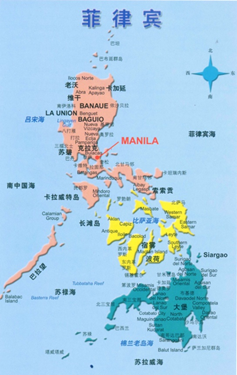
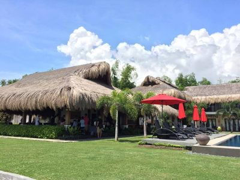
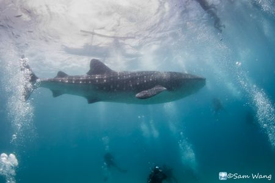
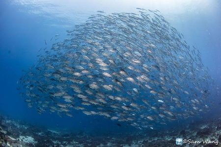
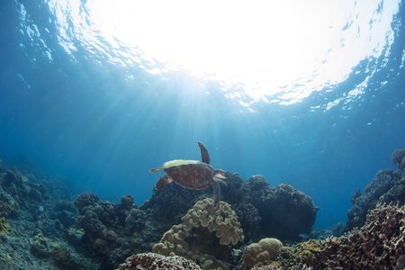

【景點介紹】 |
|
 |
|
地點：杜馬蓋地 Dumaguete 菲律賓中部的visaya水域包括南Negros、Cebu、Bohol及最右方的Leyte 4大島之間的區域，而南Negros 省的首府Dumaguete city更是其中最有名的，visaya位於颱風帶之外，全年均可潛水，杜市的人口眾多，文風鼎盛，共有三所大學及一家醫學院，市區各式餐廳林立，夜生活也是多彩多姿。此地主要的潛水resort大多位於距杜市機場車行30分鐘的Dauin區。 |
|  |  |
【著名潛點】 |
|  |  |
| 一、Apo island：這是一個菲國很有名的海洋保護區，軟硬珊瑚生長完整茂盛，主要地形為slope+wall，在潛點Mamsa（當地菲語意為Jack fish）的流區固定可以看到大群的Jack fish，島上有2家設備簡陋原始的潛水店，只有歐洲人才能接受這種方式。建議安排一天三潛Apo island，從Dauin beach到此只需船行30分鐘。 | |||||
| 二、Oslob Whale shark：這是一個在宿霧島南端的潛點，剛好位於鯨鯊迴遊的路線上，剛開始當地漁民都會用誘餌把鯨鯊引開他們的漁網，以避免鯨鯊破壞漁網。幾年前，漁民開始把體型較小的年幼鯨鯊用誘餌引到 Tanawan 離岸不遠處以吸引觀光客。自此「賞鯨鯊」活動就成為奧斯樂博的重要旅遊活動，而該地方政府也順勢介入收取高額的賞鯊費用。 | |||||
| 三、Dauin sanctuary：地形是以黑細沙為主，水深30米處有一較完整的小沈船及汽車遺跡，但大多數的生物均在5~20米處，此點地形較廣，有許多的迷你的娃娃魚、海馬、鬼龍等等的生物。 | |||||
|
【建議行程】 |
|
第一天 11/1(三) 台北-宿霧-杜馬蓋地 5J-301/ DG-6515 10/31晚上22:00在桃園機場第一航站，復興航空櫃台集合，搭乘飛機前往菲律賓-宿霧，即刻辦理轉機到杜馬蓋地。抵達後杜馬蓋地機場我們將安排專車前往渡假村CHECK IN，並稍後休息，下午進行2次船潛。(因搭機時間非常早，又轉機會有約2個小時間可在機場內稍作休息用餐，故早餐自理。) 早餐：自理，午餐、晚餐：由當地潛水店安排 |
|
第二天 11/2(四) APO ISLAND (船潛3支) 早餐後隨即出發前往APO ISLAND－這是菲國名列最佳潛點之一，在東南方禁獵區是一片漸斜坡連接著淺牆，常見大型迴游魚，如Jackfish、白鰭鯊、隆頭鸚哥等，以及成千上萬的小魚聚居在黑珊瑚叢林和洞穴中，而小丑魚，海葵和軟硬珊瑚更佈滿海床。 早、午、晚：由當地潛水店安排起床準備 |
|
第三天11/3(五) OSLOB 鯨鯊潛水(船潛3支) 早餐後隨即出發前往延著宿霧前往其東南邊的Oslob－2011.5左右，有個漁夫在小船上釣魚發現了鯨鯊，當時他一股腦把魚餌餵給鯨鯊，隔天，發現鯨鯊又來了，照慣例再餵鯨鯊，過沒多久，所有人都不捕魚了，目前這附近就有好幾隻鯨鯊待著，每天進去吃吃東西。告別鯨鯊，我們將前往Sumilon Island 進行2支潛水，清澈見底的藍色海域，欣賞各種類的軟硬珊瑚、小丑魚、海葵、海蛞蝓。 早、午、晚：由當地潛水店安排 |
|
第四天11/4(六) DAUIN潛水(船潛3支) 早餐後出發前往附近潛點DAUIN，這裡常見藍點魟、石鱸、Jackfish、海龜、海兔、大片伸出沙底60公分覓食的花園鰻等，淺灘處可常見海龍、海馬、娃娃魚等，令您目不暇給。 早、午餐：由當地潛水店安排 晚:將會至附近享用海鮮費用平均分攤 |
|
第五天11/5(日) 杜馬蓋地／馬尼拉／台北 5J-630/5J-310 午餐後，專車接往機場搭機返回馬尼拉，抵達後前往國際機場搭機返回台灣桃園機場，結束難忘的杜馬蓋地潛水之旅。 早、午：由當地潛水店安排 / 晚：自理 |
|
| 主辦單位 | 愛潛水股份有限公司 | 承辦人：愛潛水 | 行動電話：0909-097696 |
| TEL：02-2882-7696 | FAX：02-2882-7656 | ||
| E-MAILl：info@idiving.com.tw | |||
| 地址：台北市士林區前港街8號 | |||
| 協辦單位 | 萬陽旅行社有限公司 | 業務請洽：蘇恒璀 | 行動電話：0937-196518 |
| TEL：02-2517-1333 | FAX：02-2508-1537 | ||
| E-MAIL：tracy410@ms45.hinet.net | |||
| 地址：台北市南京東路3段91號四樓之三 | |||